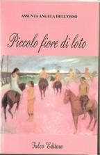

Dell'Osso Assunta Angela
Assunta Angela Dell’Osso nata a Cosenza nel 1976. Laureata in lettere è residente a Paola. Ragioniere programmatore e praticante Consulente del Lavoro presso l’Ordine Provinciale di Cosenza.

Titolo: Piccolo fiore di loto
Autore: Assunta Angela
Dell'Osso
Descrizione: «Mio piccolo fiore di loto!» Così
Yuri era solito rivolgersi alla sua amata Angy, ogni qual volta che i due
amanti si incontravano. Sembrava una storia come tante all’inizio, ma, poi, la
passione crebbe sempre più f.ino a non poter fare a meno l’uno dell’altra. Era
il Giugno del 1960, una mattina d’estate quando Angy, assieme alla sua famiglia
partì per le vacanze...
"My small lotus flower!" Therefore Yuri was usual to address to its Angy mistress, every which time that the two lovers met themselves. It seemed a history like many to the beginning, but, then, the passion more and more grew until not to be able to make less one of the other. It was the June of 1960, a morning of summer when Angy, together to its family left for the vacations...
...Era un residence ricco di
tante cose belle, di intrattenimenti musicali e di giochi. Meta di e per
chi avrebbe avuto voglia di rilassarsi e divertirsi, dopo un anno passato a
lavorare per i suoi genitori ed a studiare per lei e suo fratello Terence.
L’impatto
di Angy fu del tutto inaspettato era entusiasta e contenta di trascorrere il
suo tempo libero lì. Come prima cosa giunti in camera, iniziarono a disfare le
valigie. Dopo qualche ora, lei ed il fratello decisero di scendere giù, per
conoscere meglio il luogo, e così, presi i loro teli da mare, si diressero in
spiaggia. Era affollatissima, c’era chi giocava a beach-volley, chi faceva il
bagno, insomma tutto faceva preludere al meglio. Inoltre vi era un bellissimo
chioschetto, attrattiva indispensabile, per compensare il caldo; era ricco di
tante bibite fresche e deliziosi stuzzichini mordi e fuggi, ai quali loro due
non seppero resistere.
«Mia cara sorellina, adesso devo proprio
lasciarti; voglio andare ad esplorare un po’ la fauna del luogo. Capisci cosa
intendo, vero?».
«Sì, Sì, stai attento però» rispose Angy...
Formato: 16x23 Isbn: 978-88-89848-62-3 Prezzo: € 8,00 Pagine: 55
{kind=link}